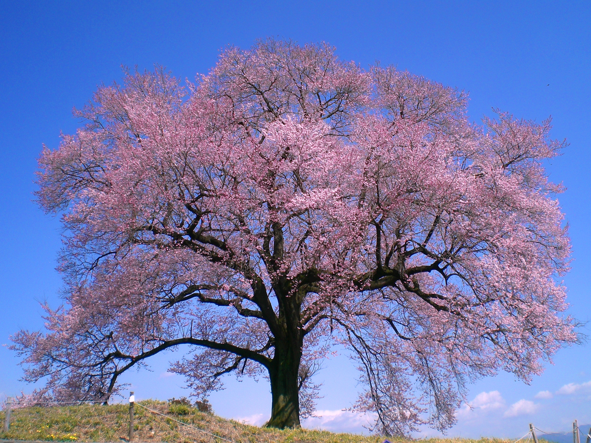

営業期間： 2020年3月28日
公開：福岡城赤坂門石垣は毎土曜10～15時公開
交通アクセス：(1)大濠公園駅から徒歩で5分。 この場所には夜に行っていただいたら最も楽しみにみえます。
歴史や雑学、さらに地図などのアクセス情報を写真つきで詳しくご紹介します. この桜は数多くある桜の中の一種類です。梅の花が咲く頃に河津桜も開花します。オオシマサクラとカンヒサクラの交雑種ではないかと言われています。人間の手で作られた園芸品種ではなく、自然が作り出した偶然の産物です。
4月に咲く桜より一足先に、きれいなピンク色の花で私たちの目を楽しませてくれる河津桜。